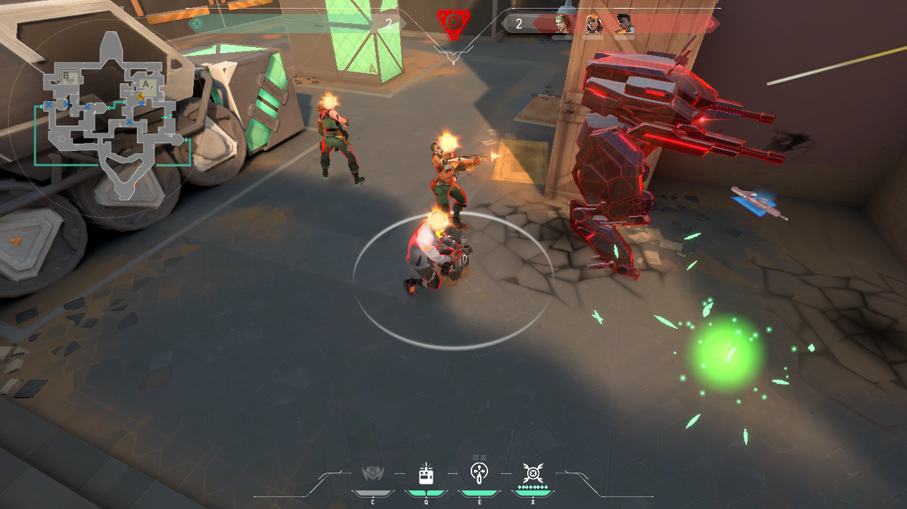
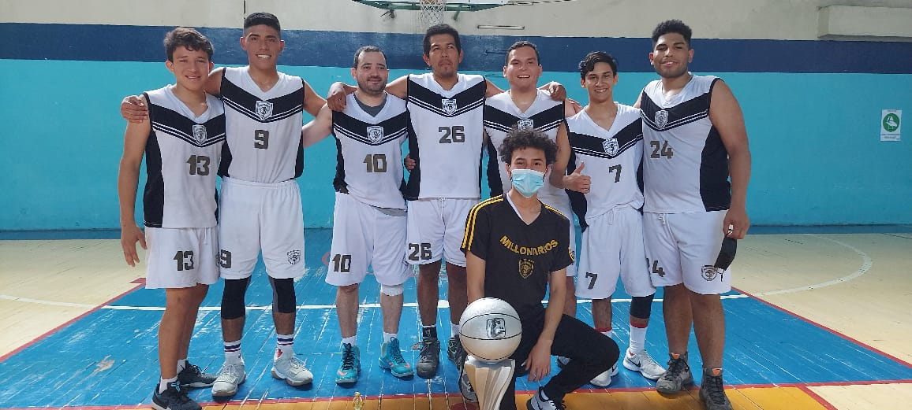

Tengo una gran lista de las cosas que me gustan hacer y dedico una considerable
cantidad de tiempo, suelo llevarlo al fanatismo en muchas de las cosas que sale de estas
unos de estos son:
PRINCIPALES
Esto es a lo que mayormente dedico parte de mi tiempo, aunque uno de estos
es solamente para jugar con amigos y pasar el rato, mientras que con otro es más
como algo que vivo de forma para llevarlo a lo profesional, eso es lo que quiero.
Al que lo dedico para jugar con amigos es VALORANT
Lo que he aprendido es ser más estratega, tambien el trabajo en equipo y
la comunicación, al día dedico unas 2 horas más o menos, aunque no juego
todos los días.

En lo que quiero llegar a ser profesional es en el BALONCESTO
me ha ayudado a mejorar en mi condición fisica, ponerme objetivos,
la importancia del lenguaje corporal, me ha dado muy buenos reflejos
y el trabajo en equipo.
Dedico en la semana unas 4 - 12 horas.
